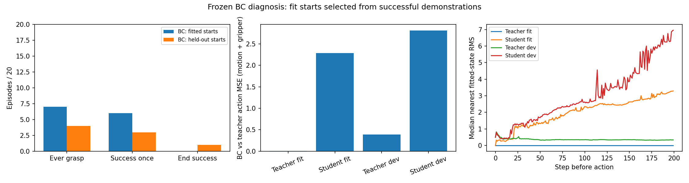

| 种子 | 抓取 | 曾成功 | 结束成功 | 视频 |
|---|---|---|---|---|
| 1210000 | 1 | 1 | 0 | 完整视频 |
| 1210005 | 0 | 0 | 0 | 完整视频 |
| 1210010 | 0 | 0 | 0 | 完整视频 |
| 1210016 | 1 | 1 | 0 | 完整视频 |
| 1210018 | 0 | 0 | 0 | 完整视频 |
| 1210023 | 0 | 0 | 0 | 完整视频 |
| 1210028 | 1 | 0 | 0 | 完整视频 |
| 1210034 | 0 | 0 | 0 | 完整视频 |
| 1210036 | 0 | 0 | 0 | 完整视频 |
| 1210040 | 1 | 1 | 0 | 完整视频 |
| 1210043 | 0 | 0 | 0 | 完整视频 |
| 1210046 | 0 | 0 | 0 | 完整视频 |
| 1210048 | 0 | 0 | 0 | 完整视频 |
| 1210053 | 1 | 1 | 0 | 完整视频 |
| 1210056 | 1 | 1 | 0 | 完整视频 |
| 1210062 | 0 | 0 | 0 | 完整视频 |
| 1210064 | 0 | 0 | 0 | 完整视频 |
| 1210069 | 0 | 0 | 0 | 完整视频 |
| 1210074 | 1 | 1 | 0 | 完整视频 |
| 1210079 | 0 | 0 | 0 | 完整视频 |